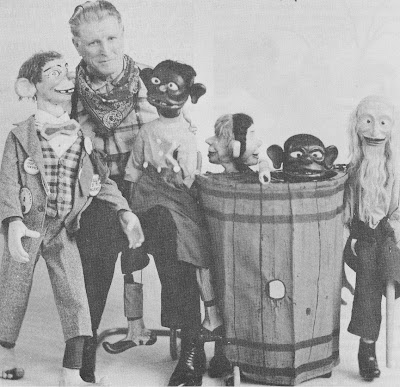

Kenneth Spencer
8/4/2011
{kind=link}

Kenneth Spencer (1899-1980) with his famous "Rubeville Five" of yesteryear. Growing up as a child in the wide open country of South Dakota, Ken saw Indians, rattlesnakes, coyotes, but few cowboys. At the age of 20 he made his way to Chicago to work at a motorcycle factory. In his spare time he attended many vaudeville shows where he became enthused over ventriloquism.He first studied vent with Marie Greer MacDonald who charged $50 for lessons to "Make the figure talk", and $50 more for "Distant Voice" lessons. While his teacher was an excellent vent, Ken did not feel she knew how to impart it to others, so he quit, and signed on for personal lessons from the pro vent, Harry Fetterer. Harry charged $1 per lesson, and Ken spent $188.00 with Mr. Fetterer.
Ken bought his first professional figure from Theodore Mack & Son. Ken began to spend free time in the Mack workshop and they put him to work roughing out heads and hands and eventually taught him the mechanical work, too. He also studied the art of figure making from Pinxy (George Larson).
In 1934 he quit working at the motorcycle factory and bought his own carving tools, thus going pro in the dual capacity of figure maker and ventriloquist. As a ventriloquist, he became well know for his Ruebville Five Act, an act filled with "Korn," making it a big hit with the rural families of the Midwest.
* * * * *
Adapted from a tribute to Kenneth Spencer written by his friend and fellow figure maker, Finis Robinson. Newsy Vents, Volume 38, No 1, 1981